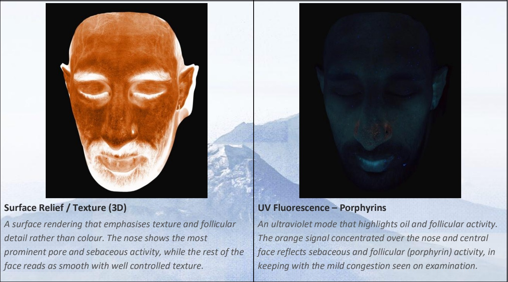
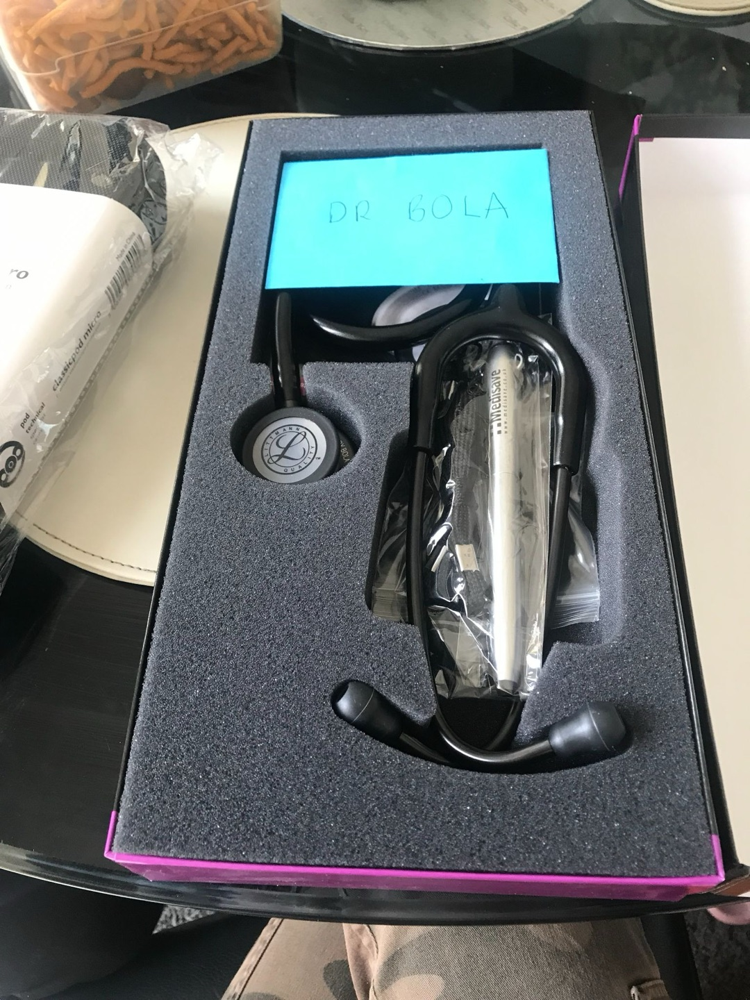
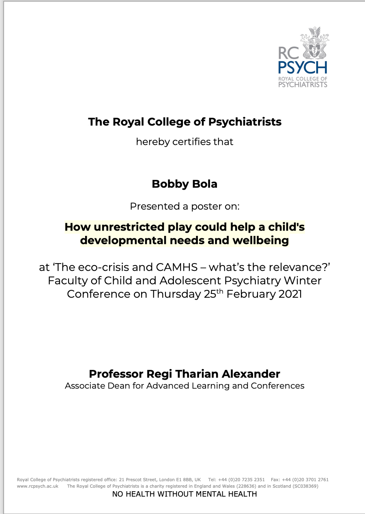
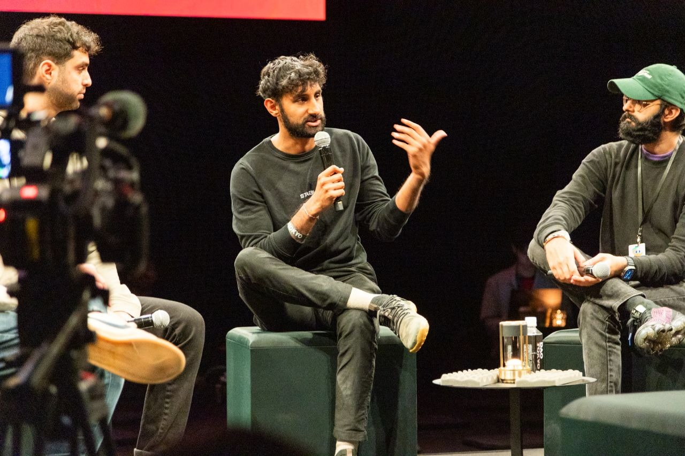

The first thing I noticed was the staircase.
It was wide, white and made of marble, rising through the hotel with a kind of quiet authority. The sort of staircase that does not need to announce luxury because every surface has already done so on its behalf. The lighting was soft. The furniture looked bespoke. Nothing seemed accidental. It was more subtle than that.
Wealth had been translated into atmosphere: into silence, space, texture, proportion, lighting, scent, service. Everything felt calm because everything had been paid for.
I had gone to HUM2N for an exploratory longevity and dermatology appointment. The clinic is based inside the Six Senses hotel, slightly north of Kensington gardes, and from the moment I walked in, I felt slightly out of place. Not because anyone made me feel unwelcome. They did not. Everyone was polite, warm and professional. But the building itself seemed to belong to a different version of society, one where care could be spacious, attentive and beautifully designed.
I asked someone for directions because the hotel felt like a maze. As I walked through the corridors, past the polished surfaces and bespoke furniture, I felt something I had not expected. Recognition. This was not just a beautiful hotel. It was not just a private clinic. It was a physical version of something I had worried about years earlier, when I was still in medical school.
A future where the best version of healthcare was no longer in hospitals or GP surgeries, but behind marble staircases. Behind wealth.
A future where prevention, time, curiosity and deep attention were available, but only to those who could afford the entrance fee.
I found reception, checked in and sat down. A doctor came out to meet me and invited me into the clinic. He was warm, thoughtful and clearly very capable. He asked me what I was looking for.
I told him the truth. I was interested in prevention. I wanted to stay healthy, not simply wait until something went wrong. I wanted to know what could be measured, what could be improved, what could be caught early, and what genuinely mattered.
A few months earlier, I had done a blood panel with 50+ biomarkers. He said that was a good start, but that they would recommend going further: 120 biomarkers, a gut test and a one-hour consultation.
The price was £1,095.
I was not shocked in the way someone is shocked by something unexpected. I knew where I was. I understood the business model. I did not walk into a private longevity clinic inside a luxury hotel expecting it to be inexpensive.
But the number still landed heavily. Not because it was surprising, but because it made the whole tension explicit.
Here was the kind of healthcare I had always been drawn to: proactive, curious, data-informed, preventative, personalised. The kind of healthcare that asks what is happening in the body before symptoms become severe. The kind that gives a person time to ask questions, understand trade-offs and make better decisions.
And here it was, priced like a luxury product. As I sat there, I found myself thinking about the version of my life where I had stayed in medicine. I could have been that doctor.
If I had not dropped out before fourth year, perhaps I would have continued through medical school, gone through foundation training, and eventually found my way into lifestyle medicine, preventative health, longevity or some adjacent corner of private care.
It is not hard to understand the appeal.
Even during medical school, I remember coming across GPs who specialised in lifestyle medicine and charged £250 or more per hour for consultations. Part of me found it fascinating. This was the area of medicine I actually cared about: food, sleep, movement, stress, metabolism, prevention, behaviour, environment, the slow accumulation of health or disease over years.
But even then, something about it troubled me. The money was enticing, of course. I would be lying if I pretended otherwise. But I remember having a discomfort I could not quite articulate at the time.
It felt as though the most humane version of medicine was being moved out of reach. The rushed, reactive, overstretched version was available to everyone. The slow, thoughtful, preventative version was increasingly available to those who could pay.
Sitting in HUM2N years later, that old discomfort returned with more clarity.
The strange part is that nothing about the appointment felt cynical. The doctor was not dismissive or salesy in the crude sense. He answered my questions carefully, consciously and in-depth. He seemed genuinely interested in health. When I asked how he had ended up there, he spoke about starting with a love for public healthcare and a desire to make a difference. However, life has it’s ways and working in private healthcare became more appealing due to the financial reasons. Completely understandable.
However, that made the experience more complicated. It would have been easier if the clinic had felt exploitative. It would have been easier if the doctors had seemed arrogant, careless or uninterested. Then I could have dismissed the whole thing as another expensive wellness product wrapped in medical language.
But that is not what happened. The doctors were excellent. Doctors who originally worked for the NHS, but were tired of the lack of time, pay and respect they were given. It’s only natural to shift to private in todays’ current situation.
The aesthetic doctor I spoke to afterwards was also excellent. She was thoughtful, precise and generous with her answers. When we discussed products, treatments and the evidence behind them, she cited research papers and even offered to send them to me afterwards. Below, you will see some of the images taken from the 3D scan of my face.

I appreciated that more than she probably realised. Because what I wanted was not simply a recommendation. I wanted to understand. I wanted to know what was being suggested, why it mattered, what the evidence said, what was uncertain, and what was actually happening to my body.
That kind of conversation is rare. And that is what made the experience so uncomfortable. The problem was not that the care was bad. The problem was that the care was good.
It was attentive. It was intelligent. It was curious. It gave space for questions. It treated the patient as someone who might want to understand the machinery of their own health, rather than simply receive instructions.
In other words, it offered many of the things people wish healthcare offered more often. But it offered them in a setting most people will never access. That is the part I could not stop thinking about.
In a country with the NHS, it is painful to watch the more expansive version of healthcare migrate into private spaces. This is not an argument against the NHS. If anything, it is the opposite. It is an argument born out of sadness for what the NHS is being asked to carry.
A system under pressure is forced to become reactive. It deals with illness once it has already become visible. It manages waiting lists, emergencies, symptoms, risk and scarcity. It is full of talented people, but they are often trapped in structures that do not give them enough time to practise the kind of medicine they imagined when they started.
So we should be careful about blaming individual doctors who leave. If a doctor wants to practise medicine with more time, more depth, more curiosity and more attention, where are they supposed to go?
Increasingly, they go private.
And if a patient wants that same kind of attention, what are they supposed to do?
Increasingly, they have to pay.
That is the tension.
HUM2N is not the villain in this story. In many ways, I admire what they are building. I am glad places like this exist. I am glad people are taking prevention, longevity, diagnostics and personalised health seriously. I would rather these ideas exist somewhere than nowhere.
But the existence of a good private clinic should not stop us from asking a harder question.
Why does this version of healthcare feel so distant from ordinary life?
Why does the ability to understand your body in detail belong so naturally inside a luxury hotel?
Why does prevention still feel like an upgrade rather than a foundation?
The issue is not whether a wealthy person should be allowed to spend money understanding their health. Of course they should. The issue is what happens when the future of healthcare is built first, and perhaps only, for people like them. Because health is already unequal long before anyone books a private consultation.
People do not arrive at illness from a neutral starting point. Their bodies carry the consequences of stress, housing, food quality, sleep, work, pollution, education, income, relationships, loneliness and access to care. By the time disease appears, the story has often been unfolding quietly for years.
That is why prevention matters so much.
But if prevention becomes another luxury category, then we risk deepening the very inequalities it should help reduce. The wealthy will receive earlier warnings, richer data, longer consultations and more personalised guidance. They will learn what is happening in their bodies before symptoms become serious. They will have the language, time and support to intervene early.
Everyone else may be left waiting for the moment when a problem becomes severe enough to enter the system. That cannot be the best we can build.
I left medical school in 2022 before fourth year. At the time, I told myself there was a reason. I wanted to understand how startups worked. I wanted to learn how products were built, how companies scaled, how fundraising worked, how sales worked, how strategy worked, how ideas moved from theory into the world.

The goal was not simply to leave medicine. The goal was to return to health with a different toolkit.
I wanted to combine what I had learned in medicine with what I could learn from technology and startups. I wanted, eventually, to contribute to something that made prevention and better health accessible to far more people.
Even during medical school, I presented a poster about how unrestricted play can help a child’s development. When I look back at that, I was always exploring what we can do to help people naturally live healthier lives before that wound opens.

That was the promise I made to myself. It is now 2026.
I have learned a lot since then. I have worked in startups. I have raised millions of dollars in fundraising, closed million-dollar deals, spoken at conferences across the world and worked the machinery of company-building. I have gained many of the skills I thought I needed.

But the original promise has become easier to postpone. There is always another job, another project, another reason to wait until I know more. This blog is partly an attempt to stop waiting.
I do not want to simply hope for a healthier England.
I do not want to admire private innovation from a distance while accepting that the best version of prevention will remain inaccessible to most people.
I do not want to complain about the system without trying to understand what better models could look like.
Because surely there is a space between the overstretched ten-minute appointment and the £1,095 longevity package.
Maybe it looks like an annual health MOT that is practical, evidence-based and affordable. Not a luxury version. Not a maximalist panel full of unnecessary tests. Not wellness theatre. Something more grounded.
A deeper but sensible assessment of metabolic health, cardiovascular risk, inflammation, nutrition, sleep, stress, lifestyle and early warning signs. Something that helps people understand where they are, what matters, and what they can actually do next.
Maybe it is subsidised by government. Maybe employers help fund it. Maybe it is delivered through local clinics, pharmacies, gyms, councils, community centres or new public-private models. Maybe it begins with people at higher risk. Maybe it starts small.
It does not need to copy the luxury clinic.
It needs to translate the best parts of it.
The time.
The curiosity.
The prevention.
The sense that a person deserves
to understand their own body before it breaks down.
Not everyone needs 120 biomarkers. Not everyone needs a gut test. Not every private health intervention is equally useful. Some of this space is early. Some of it is noisy. Some of it needs better evidence.
But the underlying desire is real.
People want to understand their health. They want to know what is happening inside them. They want to avoid becoming ill, not merely be treated once they are. They want doctors who have time to think. They want systems that notice deterioration before it becomes a crisis.
That should not be an unreasonable desire. As I left HUM2N, I kept thinking about the staircase.
On the way in, it had simply seemed beautiful. On the way out, it felt more symbolic. A threshold between two versions of healthcare.
One version is spacious, preventative, personalised and calm.
The other is crowded, reactive, exhausted and under strain.
One version asks what might happen years from now.
The other is forced to deal with what has already gone wrong.
One version is entered through marble.
The other through waiting rooms.
My experience at HUM2N was genuinely excellent. The doctors were kind. The service was thoughtful. The environment was beautiful. I do not regret going. But I left with a discomfort I cannot ignore.
Because the future of healthcare may well be deeper, smarter, more personalised and more preventative.
The question is whether that future will be shared. Or whether it will remain hidden behind beautiful staircases, available only to those who can afford to climb them.
originally published on substack — 2026-07-19